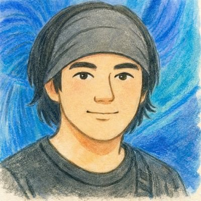

Main
ここは、自己啓発の場所じゃない。
くだらなさが、やさしさになる、
感情の遊び場です。
This isn't a self-improvement platform.
Here, silliness becomes kindness —
a playground for your emotions.
笑うと
ちょっとだけゆるむ
ゆるむと
生きやすくなる
When you laugh,
you loosen up a little.
When you loosen up,
life gets easier.
無理に変わろうとしなくていい。
ただ、この順番でついてきてください。
You don't need to force change.
Just follow along, step by step.
くだらないもので十分。笑えばゆるむ。Something silly is enough. Laughter loosens you up.
緊張がほどけて、余裕が生まれる。Tension melts away, space opens up.
否定されない。ここはだれも責めてこない場所。No judgment. Nobody blames you here.
ため込んでたこと、こっそり出してみる。What you've been holding in — gently release it.
「自分ってどんな人?」が気になってくる。"Who am I, really?" becomes an interesting question.
大きく変わらなくていい。少しでじゅうぶん。No big transformation needed. A little is enough.
笑ったり、診断したり、懺悔したり。
気分で選んでください。
Laugh. Get diagnosed. Confess. Pick your mood.
17音で笑いをとれ。くだらない川柳が集まる、令和の俳句道場。 Get a laugh in 17 syllables. A modern poetry dojo where silliness reigns.
詠んでみる Write One「今日の自分」を、ちょっと神様目線で見てみる。笑いの次は、少しだけ立ち止まろう。 View yourself through a divine lens today. After laughing, pause for just a moment.
引いてみる Draw Fortune誰にも言えなかったこと、ここで吐き出そう。責めない。笑わない。ただ、受け取る。 Say what you couldn't tell anyone. No blame. No laughter. Just acceptance.
懺悔する Confess「素直になりたいけど、なれない」。そんな人のための、小さな練習場。 "I want to be open, but I can't." A gentle practice space for exactly that.
練習してみる Start Practicingネガティブとポジティブを合わせもつのが、いちばん安定。言葉の使い方で、心のバランスを整える練習。 True stability holds both negative and positive. Practice balancing your mind through the words you use.
バランスを整える Find Balanceあなたの気質・エネルギーを「火と水」で読み解く。ちょっと不思議な、自己理解の旅。 Decode your nature and energy through fire and water. A wonderfully strange journey of self-understanding.
診断する Take the Test新しいサービスも随時追加中。 New services added regularly.
先生じゃないです。ただの人間です。 Not a teacher. Just a human being.

「なんか笑えて、なんか落ち着くサイト」を作りたくて、気づいたら、いろいろサービスを作っていました。
自己啓発が苦手なのに、心のことが好き。
難しい話より、くだらない話の方が好き。
でも、笑いながら人が少し楽になれたら、それが、
いちばん好き。
「先生」でも「専門家」でもありません。
ただ、笑えて、ゆるめる場所を作り続けています。
I wanted to build "a site that makes you laugh and somehow calms you down" — and before I knew it, I'd created a whole bunch of services.
I'm bad at self-help, but I love thinking about the mind.
I prefer silly conversations over serious ones.
But if laughter can ease someone's heart even a little —
that's what I love most.
I'm not a "teacher" or an "expert."
I just keep building places where you can laugh and let go.
笑うと
ちょっとだけゆるむ
ゆるむと
生きやすくなる
When you laugh,
you loosen up a little.
When you loosen up,
life gets easier.